Overview
This project is a responsive web application that transforms traditional PDF financial proposals into interactive digital experiences. Built for Capintel, a financial technology platform, the tool enables advisors to create and present investment proposals through a modern, modular interface that supports dynamic content, branding customization, and real-time collaboration.
The goal was to replace a static document workflow with a guided, interactive experience that feels premium for clients while remaining practical for advisors to assemble and deliver.
The Problem
The challenge was moving from static PDFs to an interactive, web-based experience while navigating significant unknowns around product shape, advisor workflows, and presentation context — and doing so in a way that could support a company raising and deploying capital at scale, including a $14M funding story tied to the product trajectory.
Requirements and Constraints
Three constraints shaped the design: legal and compliance requirements for financial content, engineering capacity (including the need to leverage existing chart components where possible), and aggressive delivery timelines that required a modular, shippable system rather than a one-off page.
User Research
Navigation Bar Research Results
Iteration 1
This iteration has the navigation menu on the sidebar – expanded. The user would need to scroll through the menu to get to the end of the list of menu items if the section they’re looking for is near-bottom.
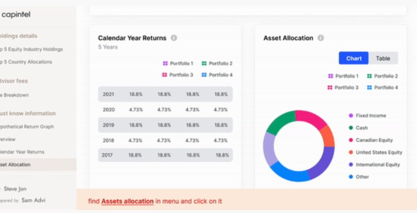
Research results: ~65% direct success rate; 5.8% bounce (give up) rate
Quotes and observations from users
- “Easy to find..but need to scroll down all the way to find item.”
- unable to find “Assets Allocation”; spent 2m42s on task (checked task 4x and clicked on “Top 5 Country Allocations” multiple times) – gave up task
Iteration 2 Chosen iteration
This iteration has the navigation menu on the side. The analysis menu items are nested within accordions to save real estate of the screen.
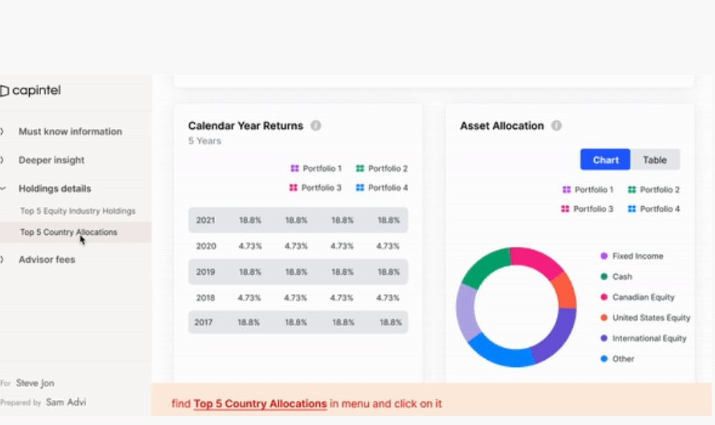
Research results: 100% direct success rate
Quotes and observations from users
- “Intuitive/Easy – [with help of content item] grouped under a bigger and relevant category.”
- quickly found “Top 5 Country Allocations” (quicker than iterations 3 and 4)
Iteration 3
The navigation bar is at the top for this iteration, with a dropdown coming down that shows the different analysis items upon the user clicking on the menu headings.
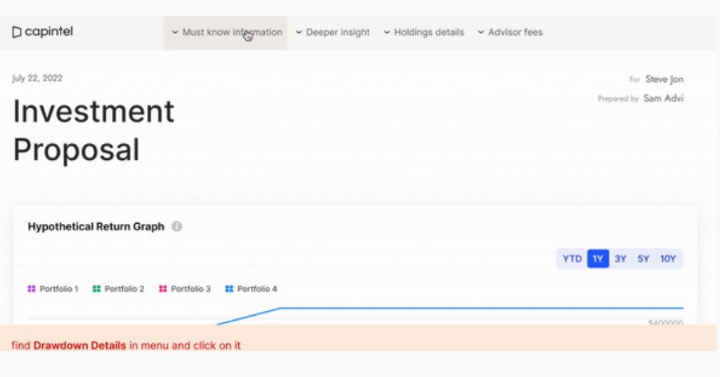
Research results: 94% indirect success rate; ~5.8% bounce (give up) rate
Quotes and observations from users
- “I think ‘[Drawdown Details]’ is under ‘Holding Details’ – I click and it’s not. [Category title] threw me off a bit – would think “Drawdown Details” be under “Holding Details.””
Iteration 4
The last iteration shows the menu hidden underneath a hamburger icon on the top right corner of the proposal. Upon clicking into it, the analysis items are nested within accordions.
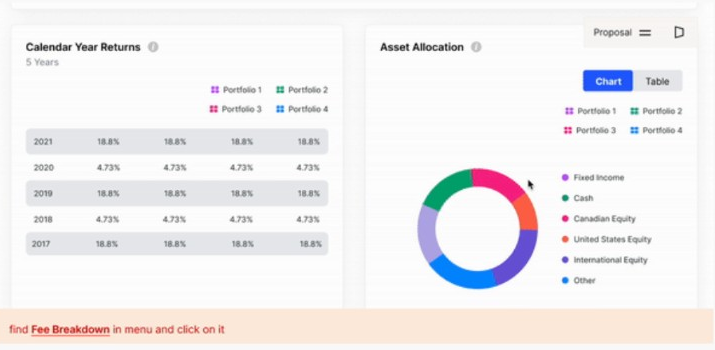
Research results: 47% direct success rate; 52.9% indirect success rate
Quotes and observations from users
- “Says ‘Proposal’ and there’s 2 little dashes – I kinda guessed on that. Look at ‘Advisor Fees’ and the ‘Fee Breakdown’ is right there. Wasn’t easy to see where the nav bar is – a lot of apps I see now have 3 dashes on the upper left hand corner.”
- User took 15–20 seconds to find the nav bar
Analysis Items Research
Second of all, we need to address the different analysis items within the proposal (there are around 30 of them in total).
Things to consider are:
- How should we design each of the analysis items (each analysis item is in itself an individual entity that requires individual consideration; e.g., which chart type or data visualization that would best represent that type of data)
- The interactions within the analysis items itself that the user can interact with
- Considering the different screen sizes (e.g., desktop, tablet, mobile) and making all the modules responsive
Let’s look at 2 of the analysis items (the lo-fi wireframes) that I’ve created and the research results/user feedback that came out of them (that’s going to inform the next phase of the design process – Hi-Fi mockups). Below, we’re going to show the 2 analysis items “Risk Reward Analysis” and “Fixed Income Credit Quality” as examples to show you my design process. The 3 considerations mentioned above are going to be guiding this process.
Lo-Fi Wireframes (and their research results)
Risk Reward Analysis
Simple definition of this analysis item:
- Risk/reward analysis of an investment is a useful tool/data that compares an investment’s potential losses with its potential profit
When I first started out with ideating the lo-fi wireframes for this module, I researched how risk reward analysis are usually presented and how they’re currently shown in our PDF proposals. After I figured that they were presented in scatterplots format, I began wireframing a scatterplot into the module while coming up with ways to make the chart and data interactive upon the user’s interaction with it.
Some of the interactions that I’ve added into this module are showing a data point’s details upon hover (hover tooltip), a time selector, and a portfolio selector (the user can select which investment portfolio’s data that they want to view).
In terms of creating responsive designs/lo-fi wireframes, different behaviours are considered as they accommodate to different screen sizes.
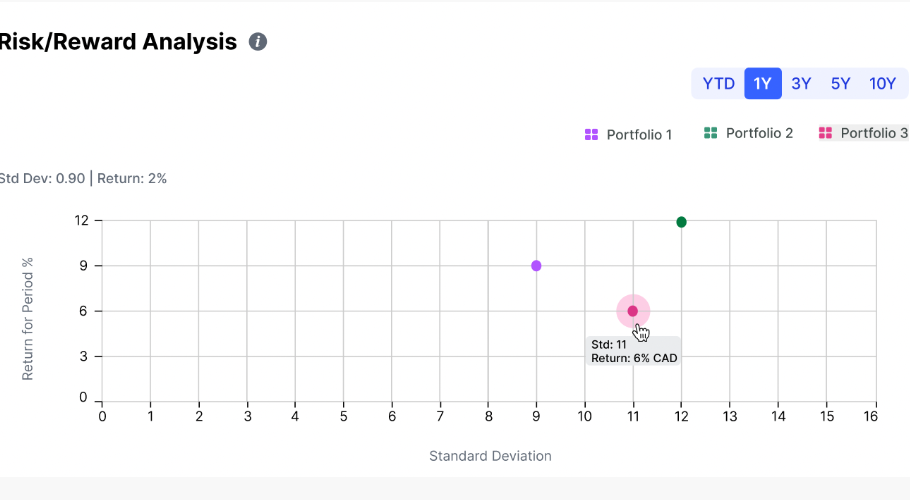
This wireframe shows the different interactive elements such as the time selector (to show specific data within a certain timeframe), the hover interaction, and of course, how we would show multiple data points (for multiple portfolios using the portfolio selector).
Interactions (Hover Tooltip)
Iteration 1
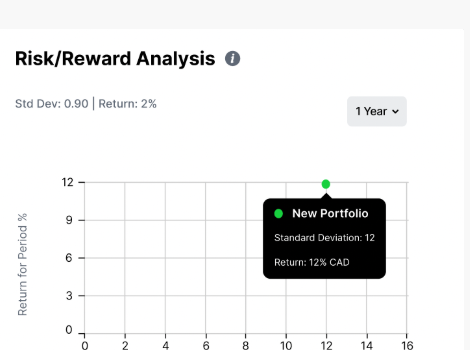
One of the interactions (other than the time selector and portfolio selector) – the hover tooltip – allows the user to see more detailed info about the data point once hovered over.
“I prefer that the value is shown with a solid background, differentiating it from the data within the scatterplot more clearly.”
Iteration 2
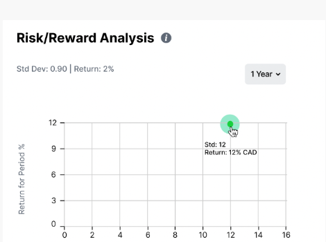
This iteration highlights the data point upon hover and the data info sits on the grid of the scatterplot without a background fill.
“I prefer this one as it has the big green dot which stands out and makes the image/chart more clear.”
Both Iteration 1 and Iteration 2 are brought into the next design phase – users prefer to have both the data point highlighted upon hover and the hover tooltip to have a solid background so that the more detailed information is more legible.
Different Behaviours of Smaller Screen Sizes (Tablets/Phones) – Responsive Design
Iteration 1
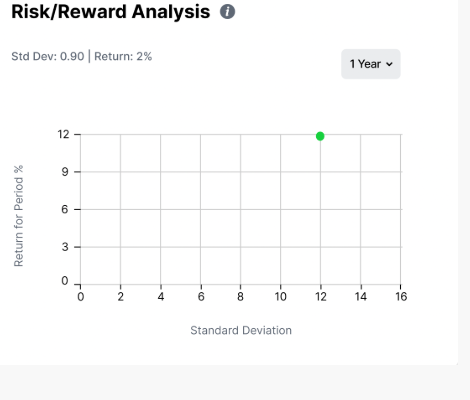
In this iteration for smaller screen sizes, in order to accommodate more data points with a smaller screen, intervals are bumped up from 1 to 2 in order to show/fit all data in the scatterplot.
Research results
- “I prefer this chart because I want all the info available by not having to do dig into the chart to do more work to see what I want to see.”
- “I like the doubled intervals as it allows me to see the whole graph without having to move the screen.”
Iteration 2
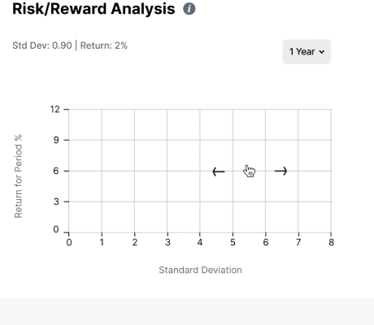
In this iteration, intervals remain the same, but the interaction of dragging across the screen to view more data points is created to fit more data.
“I think giving the user more control as in this chart just makes it more confusing because now there is a unique interface element that the user has to understand to consume the information rather than just making sense of a single presentation.”
Iteration 1 is brought into the next design phase – people prefer scaling the scatterplot by bumping up the intervals rather than dragging across the screen to view more values.
Fixed Income Credit Quality
Simple definition of this analysis item:
- Credit quality is a measurement of an individual’s or company’s creditworthiness – it is an indicator of credit risk. Credit quality is also one of the principal criteria used for judging the investment quality of a bond or fixed income product.
When I first started creating the lo-fi wireframes for this analysis item, I took a few different aspects of fixed income credit quality into consideration.
First, I have to consider the different credit ratings and the type of chart best to display them (“AAA” and “AA” (high credit quality) and “A” and “BBB” (medium credit quality); credit ratings for fixed incomes below these designations (“BB,” “B,” “CCC,” etc.) are considered low credit quality, and are commonly referred to as “junk bonds/fixed income products.”
Second of all, I had to consider how to show the percentages of the credit ratings each portfolio is comprised of in the chosen chart type.
2 Different Iterations of Showing Fixed Income Credit Quality
Iteration 1
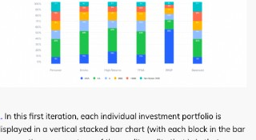
In this first iteration, each individual investment portfolio is displayed in a vertical stacked bar chart (with each block in the bar representing a percentage of the credit quality that is in that portfolio – e.g., there is 17% of AAA rated fixed income product(s) in Roy’s Off Book Portfolio). A legend is included to differentiate the colour-coded ratings in the bars.
60% of users find this iteration better at showing distribution of credit ratings and 55% believe it to be better at comparing the different portfolios. “Its easier to see quickly the differences in percentages with this one.”
Iteration 2
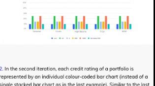
In the second iteration, each credit rating of a portfolio is represented by an individual colour-coded bar chart (instead of a single stacked bar chart as in the last example). Similar to the last iteration, a legend is included to differentiate the colour-coded bars.
“I prefer the 1st iteration because the percentages are explicitly written inside each bar which are quicker to read than matching values against the vertical axis.”
Main Research Findings
-
People who have seen this type of data before understand what it’s showing – they’re usually shown in this format on the platform they’re using as well
“Yes, I have seen these charts before in my online investments, though I have not taken much time to look at them. The 1st chart/iteration is similar to how I see bond ratings broken down; I think these charts are trying to show me credit quality broken down by portfolio type, and within each type, the risk profile of investments.”
-
Need to clarify that the breakdown is a breakdown of credit ratings of the funds within a portfolio, not the amount allocation – include description of what the credit ratings mean and that the portfolios are not funds
“I think that they are telling me the breakdown of the fixed income portion of my investments and telling me the amounts in each fund category. I think that this is a snapshot of all my wealth. Personal being saving accounts and then broken down by type of fund. Environmental, high returns, etc… tell me which types of investments I have.”
- General explanation of what “fixed income includes” or show breakdown of type of fixed income investments within a portfolio
Iteration 1 chosen to be implemented for Hi-Fi along with several other changes to be made for next iteration:
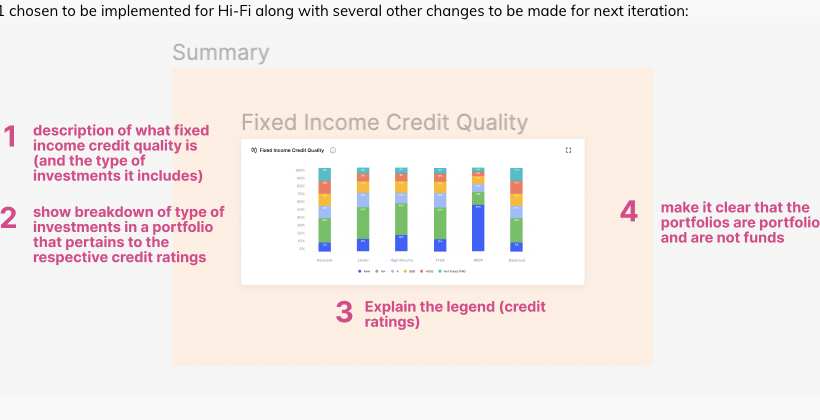
- Description of what fixed income credit quality is (and the type of investments it includes)
- Show breakdown of type of investments in a portfolio that pertains to the respective credit ratings
- Explain the legend (credit ratings)
- Make it clear that the portfolios are portfolios and are not funds
Research Across 10 Analysis Items
1. Portfolio Holdings Summary
Shows the different funds held in different investment portfolios that the client holds.
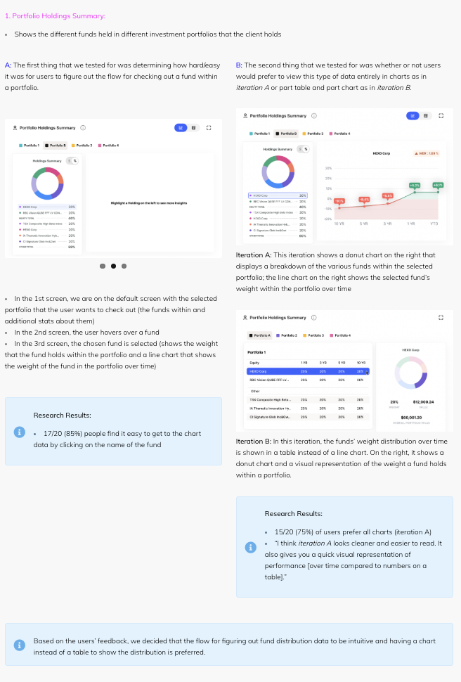
17/20 (85%) people find it easy to get to the chart data by clicking on the name of the fund. 15/20 (75%) of users prefer all charts (iteration A). Based on the users’ feedback, we decided that the flow for figuring out fund distribution data is intuitive and having a chart instead of a table to show the distribution is preferred.
2. Drawdown Details
Drawdown is an investment term that refers to the decline in value of a single investment or an investment portfolio from a relative peak value to a relative trough. The Drawdown Details table includes metrics like maximum decline, months of decline, peak date, valley date, and recovery time. Based on user feedback, the table (details) and the chart (analysis) were merged into one module to improve understanding.
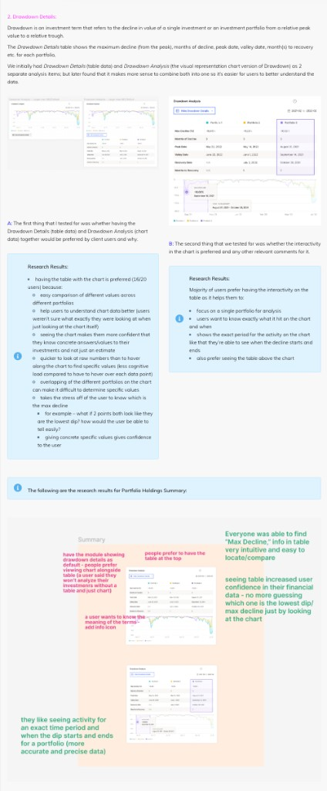
16/20 users preferred having the table and chart together. Users preferred interactivity within the table and favored the table being placed above the chart. Decisions included showing drawdown details by default, placing the table at the top, and adding info icons for terminology.
3. Risk Reward Analysis
The risk reward analysis marks the prospective reward an investor can earn for every dollar they risk on an investment. Many investors use risk reward to compare the expected returns of an investment with the amount of risk they must undertake to earn these returns.
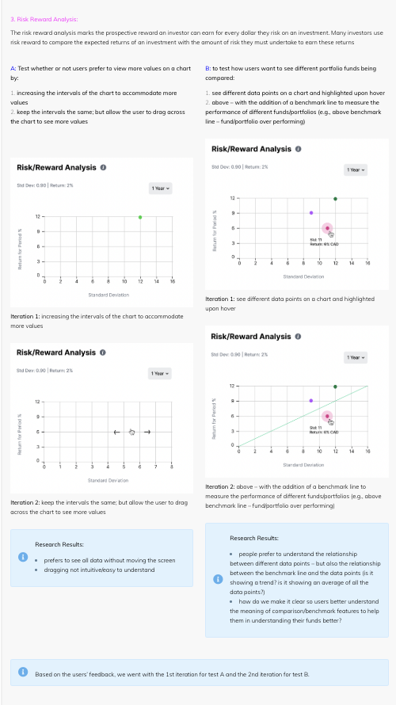
Based on the users’ feedback, we went with the 1st iteration for test A (scale intervals to show all data) and the 2nd iteration for test B (add a benchmark line for comparison).
4. Overview
Overview is a summary of the investor client’s entire investment portfolio – showing all the portfolios he/she has and their performance over time (based on increase/decrease on percentage) on a line chart.
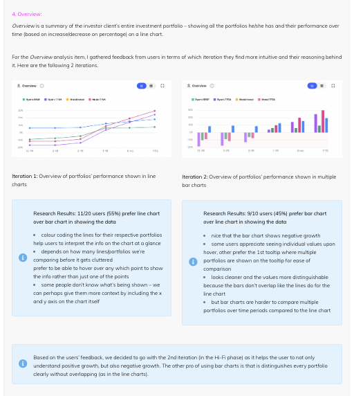
11/20 users (55%) prefer the line chart; 9/20 (45%) prefer the bar chart. Based on feedback, we decided to go with the 2nd iteration (bar chart) in the Hi-Fi phase because it helps users understand both positive and negative growth, and distinguishes every portfolio clearly without overlapping.
5. Risk Profile
For risk profile, think of it as an assessment of your risk appetite when it comes to investing. As the name states, it is a profile of how tolerant you are for risk and the type of investor you are. On risk profile, there is a target breakdown of how an investor wants to break down their investments and their actual breakdown (e.g., across different risk finance products).
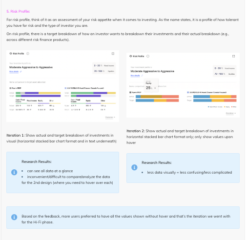
Based on the feedback, more users preferred to have all the values shown without hover and that’s the iteration we went with for the Hi-Fi phase.
6. Calendar Year Returns
Calendar Year Returns shows the returns for all the different investment portfolios for different time periods (years). (e.g., percentage in returns/loss in 2019, 2020, 2021, etc.).
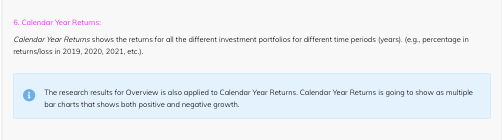
The research results for Overview is also applied to Calendar Year Returns. Calendar Year Returns is going to show as multiple bar charts that show both positive and negative growth.
7. Hypothetical Return Graph
Hypothetical Return Graph shows a projected return in growth for the clients’ different investment portfolios over time.
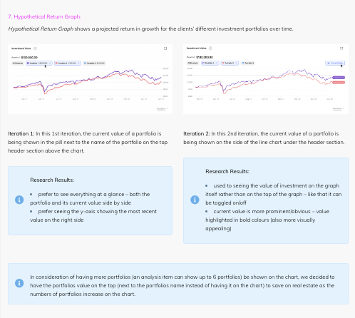
In consideration of having more portfolios (an analysis item can show up to 6 portfolios) be shown on the chart, we decided to have the portfolio value on the top (next to the portfolio name instead of having it on the chart) to save on real estate as the number of portfolios increases on the chart.
8. Risk Metrics
Risk Metrics shows a couple of metrics that measure risk in a client’s investment portfolio (e.g., standard deviation, maximum drawdown).
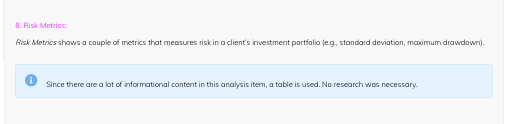
Since there is a lot of informational content in this analysis item, a table is used. No research was necessary.
9. Drawdown Analysis
Drawdown is an investment term that refers to the decline in value of a single investment or an investment portfolio from a relative peak value to a relative trough. Drawdown Analysis is the counterpart module to Drawdown Details.
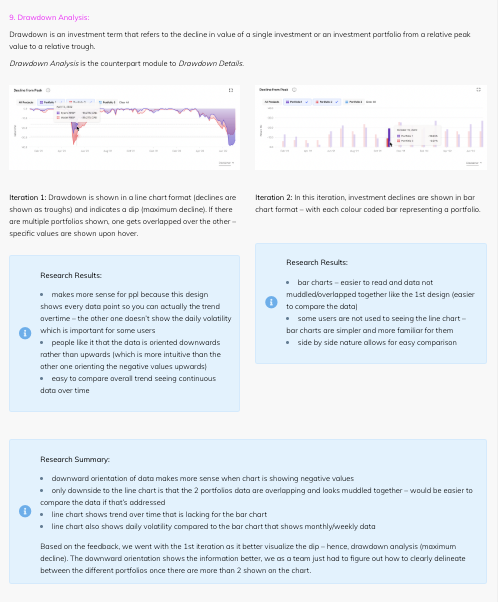
Based on the feedback, we went with the 1st iteration as it better visualizes the dip – hence, drawdown analysis (maximum decline). The downward orientation shows the information better; as a team we just had to figure out how to clearly delineate between the different portfolios once there are more than 2 shown on the chart.
10. Assets Allocation
Assets Allocation shows the investor where their investments are allocated across different products (e.g., Fixed Income, Canadian Equity, Cash, etc.) and the percentage allocated to each for each portfolio that the client/investor holds.
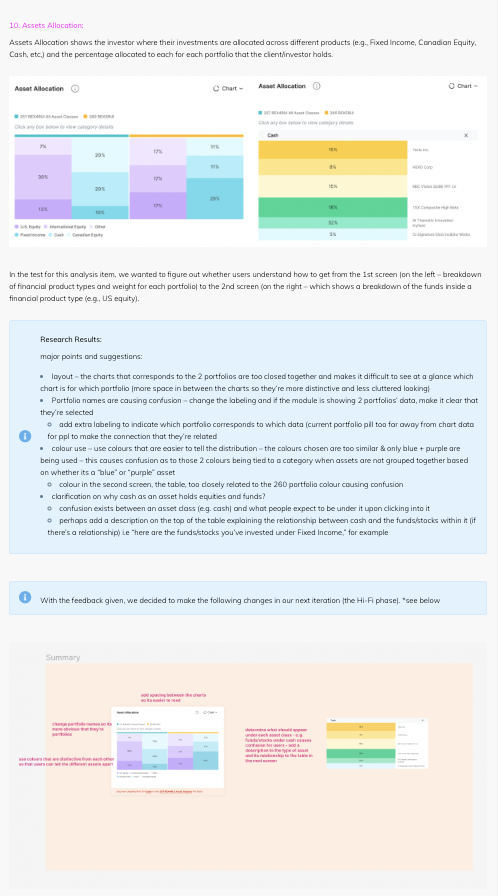
Research results & next changes
- Add spacing between the charts so it’s easier to read
- Change portfolio names so it’s more obvious that they’re portfolios
- Use colours that are distinctive from each other so that users can tell the different assets apart
- Determine what should appear under each asset class — e.g. funds/stocks under cash causes confusion for users — add a description of the type of asset and its relationship to the table in the next screen
Advisor Interviews
We conducted interviews with 12 financial advisors (showing them our MVP prototype – the 10 MVP analysis items and gathering their feedback on it). Based on interviewing and gathering their feedback, I’ve synthesized the research results and came up with different relevant action items tackling each problem/opportunity area.
The action items are then brought to the product and development team to prioritize based on its importance and effort to execute.
Below is a snapshot of the different action items that we’re going to carry out in our next design phase:
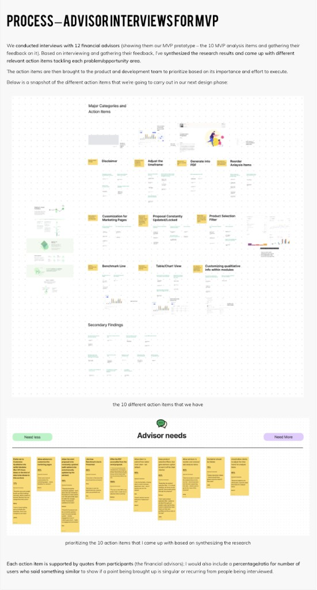
Each action item is supported by quotes from participants (the financial advisors); I would also include a percentage/ratio for number of users who said something similar to show if a point being brought up is singular or recurring from people being interviewed.
Future Vision
Final Thoughts
There were many challenges to this project as multiple user groups have to be considered (both financial advisors and their clients). On an even deeper level, people who invest can be further categorized into many more groups based on the difference in their level of financial literacy. Creating an application that can be seen as technical and jargon heavy for even people not familiar with finance can be a challenge. The goal is to accommodate as many users as possible while still keeping in mind that financial advisors still want to have control over what they want to share with their clients – it is important to keep the balance when making design decisions.
Research has been done on pretty much every analysis item going into the digital financial proposal application – with research results taken into consideration and applied in the Hi-Fi mockups. Action items are being prioritized and implemented in the beta phase that will go out to our proactive users to try out. What we’ve seen so far are the 10 analysis items we have for our MVP; as we go into beta phase and gather feedback from our actual users, it is going to further inform us in terms of how we should be proceeding with the other 20 modules that are in Hi/Mid fidelity right now.